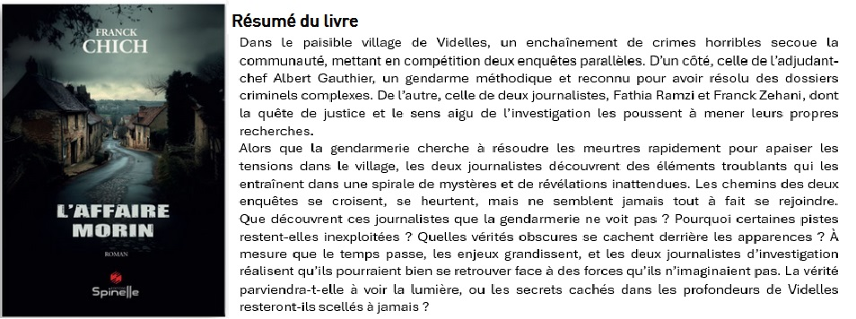
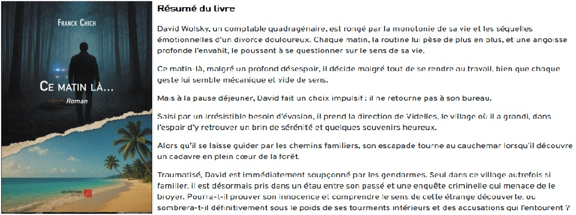
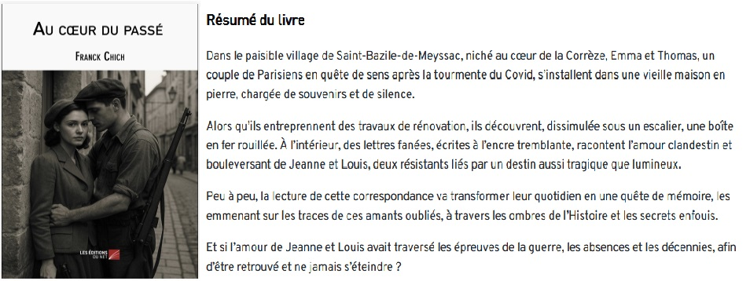
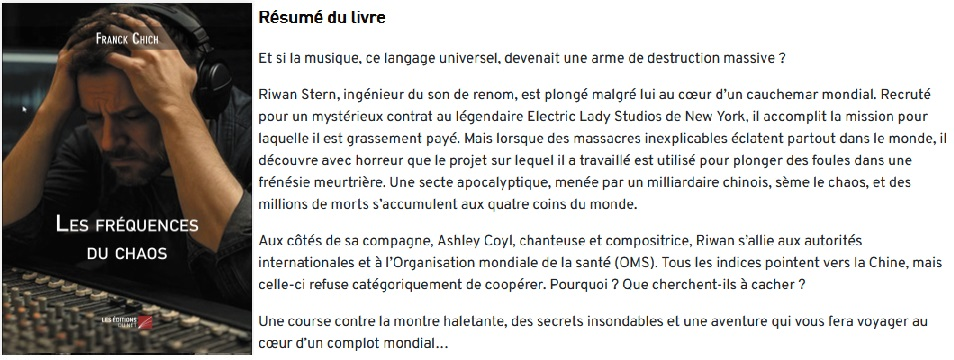
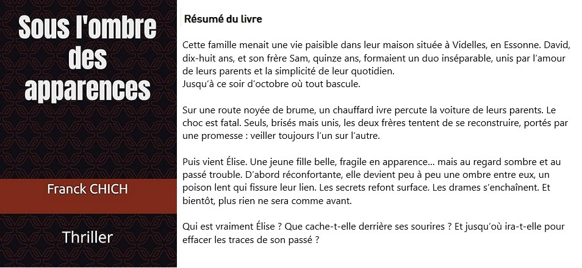

(cliquez sur les titres pour voir la vidéo)
L'affaire Morin

Comment est né mon livre : "L’Affaire Morin"
L’idée d’écrire "L’Affaire Morin" m’est venue d’une envie de raconter une histoire sombre dans un cadre familier : un petit village tranquille de l’Essonne, Videlles.
Pourquoi Videlles ? Tout simplement parce que j’y habite. J’aime l’atmosphère de ce village, à la fois paisible et chargé de mystères pour qui sait regarder derrière les apparences.
Les personnages de ce roman sont pour la plupart inspirés de personnes que j’ai croisées ou que je connais depuis toujours.
Je n’ai pas eu besoin de chercher bien loin pour créer les deux protagonistes principaux, Fathia et Franck, journalistes d’investigation : ce sont tout simplement ma femme et moi.
L’idée d’inclure la gendarmerie de Guigneville vient d’une expérience personnelle. J’ai été victime d’un cambriolage, et les gendarmes sont venus relever des empreintes et des traces d’ADN chez moi.
Un mois plus tard, ils m’ont rappelé pour un prélèvement : ils avaient trouvé un ADN masculin et voulaient s’assurer qu’il ne m’appartenait pas.
Quand je leur ai demandé ce qu’ils allaient faire de cet échantillon, s’ils allaient le comparer à d’autres, ils m’ont répondu qu’il serait simplement détruit.
J’ai trouvé leur démarche complètement absurde. J'étais tout de même rassuré, je n'avais pas cambriolé mon domicile.
C’est de cette situation un peu surréaliste qu’est née l’idée de L’Affaire Morin.
J’ai eu envie d’explorer, à travers la fiction, les failles, les hasards et les zones d’ombre que l’on peut rencontrer même dans les lieux les plus tranquilles.
Ce matin-là...

Comment est né mon livre : "Ce matin-là..."
L’idée d’écrire "Ce matin-là..." est née d’une réflexion sur la résilience et la capacité de chacun à se relever, même lorsque tout semble perdu.
Le roman raconte l’histoire d’un homme brisé par un divorce douloureux, vidé de toute envie de vivre, qui se retrouve malgré lui impliqué dans une affaire qui le dépasse.
Et pourtant, au cœur de ce chaos, il retrouve peu à peu l’espoir d’une vie nouvelle, une renaissance inattendue qui prend la forme d’une fuite, mais aussi d’une libération.
À travers ce récit, j’ai voulu montrer que, malgré les épreuves et les embûches de la vie, il existe toujours une lueur d’espoir.
Qu’il est possible, même au bord du gouffre, de reprendre son souffle et de trouver un sens à sa route.
Pourquoi Tahiti ? Parce que ma fille y vit, et que j’ai eu la chance de m’y rendre.
J’y ai découvert un cadre d’une beauté bouleversante, une terre d’émotions et de contrastes,
où la nature, la lumière et la générosité des gens inspirent la paix intérieure.
Je suis littéralement tombé amoureux de la Polynésie, et elle s’est naturellement imposée comme le décor de cette histoire de reconstruction et d’espoir.
Au cœur du passé

Comment est né mon livre : "Au cœur du passé"
L’idée d’écrire "Au cœur du passé" m’est venue d’un fait tout simple : mon frère et ma belle-sœur venaient d’acheter une vieille maison en Corrèze,
dans le paisible village de Saint-Bazile-de-Messac. En les voyant la restaurer, j’ai commencé à imaginer ce que ces murs pouvaient bien renfermer :
des traces de vie, des histoires oubliées, peut-être même des fragments d’amour ayant traversé les années.
De cette idée est née l’histoire d’un couple de Parisiens qui décide de tout quitter pour s’installer dans ce village.
En rénovant leur maison, ils découvrent par hasard une correspondance bouleversante entre deux résistants amoureux.
Ces lettres, empreintes de passion et de courage, réveillent non seulement la mémoire du passé, mais aussi quelque chose de profond entre eux :
l’amour, qu’ils croyaient enfoui, ressurgit à travers ces mots d’autrefois.
Les amis du couple ne sont autres que mon frère, ma belle-sœur… et leurs chiens, bien sûr.
Ce clin d’œil personnel donne au récit une touche authentique et affectueuse.
"Au cœur du passé" est avant tout une histoire de transmission et de renaissance,
celle d’un amour qui traverse le temps, reliant les cœurs d’hier à ceux d’aujourd’hui.
Les fréquences du chaos

Comment est né mon livre : "Les fréquences du chaos"
L’idée d’écrire "Les fréquences du chaos" m’est venue en écoutant mon fils, Riwan, me parler avec passion de son métier d’ingénieur du son.
Il me racontait souvent ses projets, ses recherches, ses expérimentations musicales…
Et un jour, une question m’a traversé l’esprit : et si la musique, cette force capable d’émouvoir, de rassembler et d’élever les âmes, pouvait aussi détruire ?
De cette réflexion est née l’histoire d’une secte qui recrute Riwan, sans qu’il soit informé de la finalité du projet,
pour exploiter son talent et créer une musique aux effets dévastateurs.
Une œuvre sonore si puissante qu’elle provoque une frénésie meurtrière chez ceux qui l’écoutent.
À travers ce roman, j’ai voulu explorer le contraste fascinant entre la beauté pure de la musique et sa fictive dérive vers la folie.
La même onde qui fait battre le cœur pourrait aussi le briser.
La même harmonie qui émeut pourrait devenir chaos.
"Les fréquences du chaos" est donc à la fois un thriller et une méditation sur la dualité de l’art :
sa lumière, sa part d’ombre, et ce pouvoir mystérieux qu’il exerce sur nos émotions.
(cliquez sur les titres pour voir la vidéo)
Sous l'ombre des apparences

Comment est né mon livre : "Sous l'ombre des apparences"
L’idée d’écrire "Sous l'ombre des apparences" m’est venue d’une envie de raconter une histoire